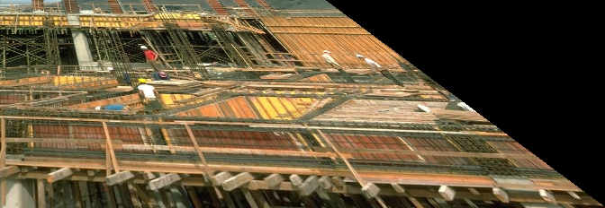
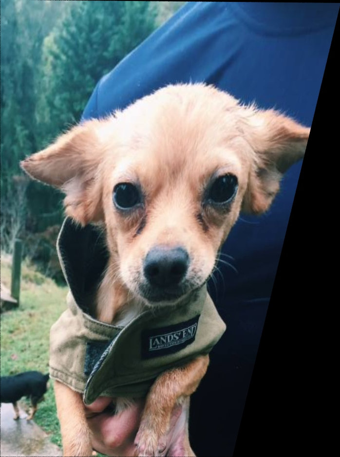
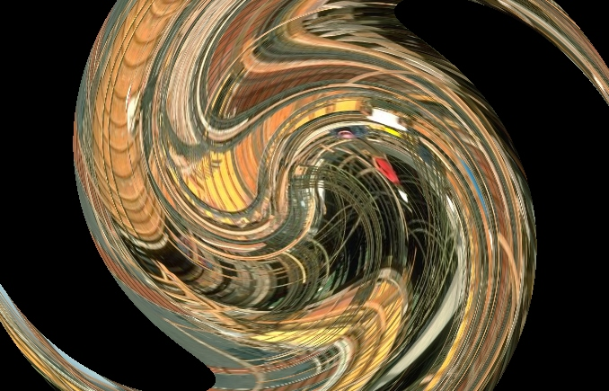
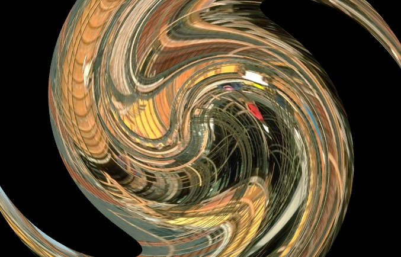
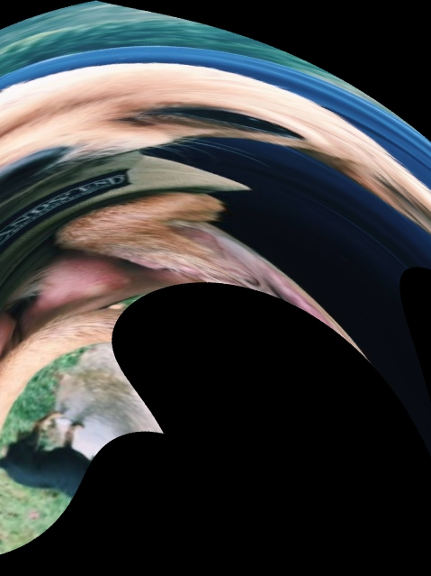

Image warping is the process of digitally manipulating an image such that any shapes portrayed in the image have been distorted. While an image can be transformed in various ways, pure warping means that points are mapped to points without changing the colors. This can be based mathematically on any function from (part of) the plane to the plane.
In geometry, an affine transformation is a function between affine spaces which preserves points, straight lines, and planes. Also, sets of parallel lines remain parallel after an affine transformation. An affine transformation does not necessarily preserve angles between lines or distances between points, though it does preserve ratios of distances between points lying on a straight line.
Last week we were asked to build a warping tool based on affine and projective warps. The tool provides for input of a sequence of operations, composes a single transform from the sequence, and finally, will apply the transform to the input image via inverse mapping. The program constructs the matrices for each of the following transformations: perspective warping, twirling, and inverse map warping. Finally, the tool warps an input image into the new shape, and then performs inverse mapping of the input image to the output image via the inverse of the transformation.
A typical image warp can produce both maginification and minification in the output image. Where the warped image is magnified compared with the input, the artifacts are the result of oversampling. Where the warped image is minified compared with the input, the artifacts are aliasing errors due to undersampling. This week, we were asked to choose a strategy for artifact removal in the presence of nonlinear warps.
The following commands can be used in the terminal for complication, execution, and clean-up.
$> make
$> ./okwarp input.img
$> ./okwarp input.img output.img
$> make clean
Known Issues: I had to copy and paste the contents of matrix.cpp into matrix.h so that my okwarp.cpp program could find and use its functions. Additionally, I was unable to use the inv_map() function properly. The code wrote is commented out in okwarp.cpp if you'd like to take a look.
px: 0.00001 py: 0.002
Result Image: perspective.jpg
px: 0.00001 py: -0.002
Result Image: perspective2.jpg
px: 0.00001 py: 0.002
Result Image: perspective_magnification.jpg
px: 0.00001 py: -0.002
Result Image: perspective2_magnification.jpg
px: 0.00001 py: 0.002
Result Image: perspective_both.jpg
px: 0.00001 py: -0.002
Result Image: perspective2_both.jpg

cx: 0.5 cy: 0.5 s: 5
Result Image: twirl.jpg
cx: 0.1 cy: 0.2 s: 3
Result Image: twirl2.jpg
cx: 0.5 cy: 0.5 s: 5
Result Image: twirl_magnification.jpg
cx: 0.1 cy: 0.2 s: 3
Result Image: twirl2_magnification.jpg
cx: 0.5 cy: 0.5 s: 5
Result Image: twirl_both.jpg
cx: 0.1 cy: 0.2 s: 3
Result Image: twirl2_both.jpg
CPSC 6040: Computer Graphics Images, Ioannis Karamouzas